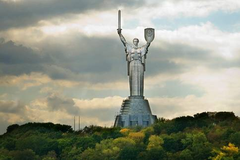

Своєрідною візитівкою Києва є монумент «Батьківщина-мати», що увінчує головну будівлю Меморіального комплексу. Автор монумента – скульптор Василь Бородай. У створенні споруди брали участь скульптори, архітектори, велика група інших фахівців, учених, робітників різних галузей.
Задум утілив у життя Київський завод ім. Паризької Комуни. Тривалі експерименти засвідчили, що зводити монумент треба з листової нержавіючої сталі завтовшки півтора міліметра.
У світі на той час не практикувалися суцільнометалеві скульптури, отже, і досвіду їхнього створення не було, тому постала потреба в самостійному розв’язанні низки важливих проблем, які й були успішно реалізовані.
Пам’ятник вражає своєю грандіозністю. Фігуру жінки зі щитом і мечем у руках установлено на конусному п’єдесталі 40-метрової висоти (загальна висота – 102 м, вага близько 500 т), висота скульптури – 62 м.
Скульптура «Батьківщина-мати» – це унікальна суцільнозварна сталева споруда, яка складається з трьох шарів: основного сталевого каркаса вагою понад 280 т, допоміжного каркаса з обшивкою вагою 108 т і самої обшивки з півтораміліметрової нержавіючої сталі вагою 90 т, яку виготовлено з 27 багатотонних блоків. Спеціальний метод зварювання розроблений Інститутом електрозварювання ім. Є.О. Патона. Загалом під час монтажу було покладено близько 30 км зварювальних швів. Коли дивишся на скульптуру, важко повірити, що невеличкий щит має розмір 12х8 м; меч – довжину 16 м. На вістрі меча є спеціальний пристрій для гасіння коливань вітрового навантаження.